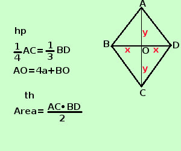

|
sviluppo Risolvere il seguente problema In un rombo 1/4 della diagonale maggiore equivale ad 1/3 della diagonale minore , mentre la semidiagonale maggiore supera di 4 la semidiagonale minore; calcolare l'area del rombo in un rombo le diagonali sono tra loro perpendicolari e tagliano il rombo in 4 triangoli rettangoli uguali A destra traccio la figura e scrivo l'ipotesi(hp) e la tesi(th)  Per scrivere l'ipotesi scorro il testo e lo riscrivo in linguaggio geometrico: "1/4 della diagonale maggiore equivale ad 1/3 della diagonale minore" scrivo 1/4 AC=1/3 BD "la semidiagonale maggiore supera di 4 la semidiagonale minore" scrivo AC/2 = 4 + BD/2 La tesi dice che devo trovare l'area, per trovare l'area ho bisogno della base BC e dell'altezza AB Come incognite, per limitare le frazioni, mi conviene indicare le semidiagonali, una volta trovati i loro valori, moltiplicando per 2 trovero' le diagonali e quindi l'area Diagonale maggiore AC Diagonale minore BD BD=2x B0 = OD = x AC = 2y AO = OC = y " 1/4 della diagonale maggiore equivale ad 1/2 della diagonale minore" si scrive 1/4·2y = 1/3·2x 1/2 y = 2/3 x 3y = 4x "la semidiagonale maggiore supera di 4a la semidiagonale minore" si scrive y = 4a + x Faccio il sistema
risolvo con il metodo di sostituzione, ricavo y dalla seconda equazione e lo sostituisco nella prima
quindi AO = 12a BO=16a AC = 2·AO = 24a BD = 2·BO = 32a ora posso trovare l'area Area = BD·AC /2 = 32a ·16a /2 = 256a2 L'area vale 256a2 |